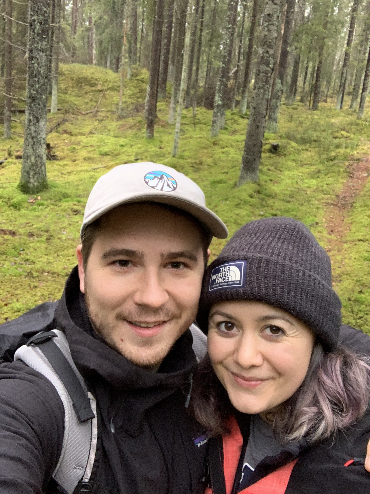

I was born and raised in Colorado, USA. And I graduated from Colorado School of Mines with a BS in Geological Engineering and a minor in Public Affairs. I then went on to work at Ecocion/Intelex for 4 years as a consult working with our software to store client data and create and run calculations to determine Greenhouse Gas emissions. The job required knowledge in environmental regulations, the oil and gas industry, SQL and databases. While working there my husband and I moved several times: from Denver to Boston to Berlin. Nearing the end of our stay in Berlin, we visited Sweden and fell in love with the place. After much research, we decided to move here at which point Craft Academy became a clear pathway to make the career shift I had been hoping to make.
I am a nerd at heart and love watching and reading things like Doctor Who, Star Wars, Lord of the Rings and Star Trek. Growing up, I had a diverse range of interests including dance, photography, animation and piano. Nowadays I spend most of my effort towards outdoor activities and living a healthy life while trying to lessen my physical impact on the world.